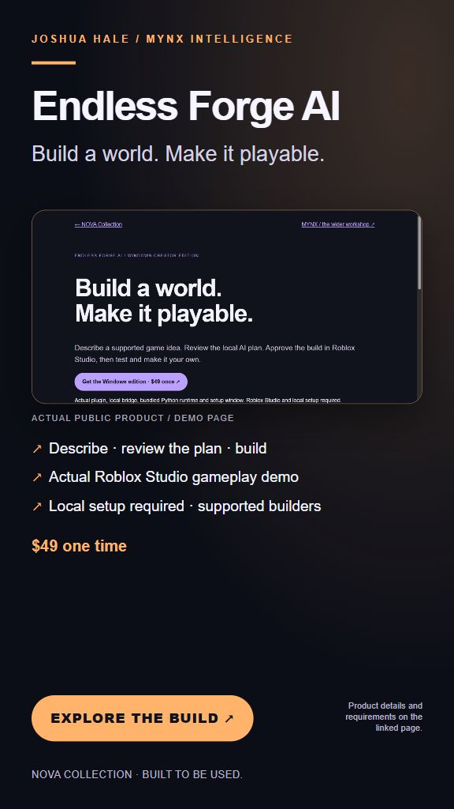

Your machine.
Your home ground.
Supported local workflows can keep models, context and files on your own hardware. A personal operator should fit your life and your work.
JOSHUA HALE / FOUNDER & CHIEF ARCHITECT
Local AI operators with identity. Autonomous workflows on your terms. Worlds, tools and ecosystems built around the person using them.
We build the AI. You call the shots.

THE MYNX APPROACH
Your hardware. Your context. Your direction.
Know what it does, what it connects to and where your information goes.
Supported local workflows can keep models, context and files on your own hardware. A personal operator should fit your life and your work.
Choose what you connect and share. Each product explains its local storage, permissions and external dependencies, so you can make an informed choice.
Agents carry work across steps using their implemented tools and permissions. What runs independently and what waits for approval depends on the build and task.
Installed local models and supported tools can keep working offline. Email, web access and hosted services still need an internet connection.
Not a mystery box. A tool you can understand. An operator you can direct.
ONE BUILDER. AN ENTIRE BODY OF WORK.
I’m Joshua. I build the character, the capability and the environment it lives in: local operators with memory and tools; studios that turn ideas into usable work; apps, games and the infrastructure behind them.
Explore what’s already here ↘ENTER THROUGH SOMETHING REAL
Start with a working demo. Explore each product’s scope before choosing a download.
Enter Nova’s public visitor workspace, backed by a broader local operator platform.
Meet Nova ↗
Explore the Roblox builder and its Windows creator workflow.
Explore Forge ↗
A local mail watcher and desktop helper. Try the fictional inbox demo.
Try Rook ↗MYNX is an existing branded personal operator whose personality and skills can be shaped through ordinary scripts, then combined. A teacher can take on an energetic style and speak Spanish. The interaction should fit the person using it.
The existing script-based behavior is Joshua’s account, supported by the original MYNX portfolio and located modular-loading / AgentDNA source. The recording below demonstrates selected LocalNova operator capabilities. A full MYNX personality/skill-swap demonstration is a separate workflow.
I built the work in this portfolio across Acer Chromebooks and two Snapdragon laptops, including an Acer Chromebook 15 and this Lenovo. The Lenovo is still my production machine today: generating media, combining it into shorts and films, and running the apps, servers and tunnels that Nova helps operate.
From a 4 GB Chromebook beginning to the current Snapdragon operation, the same approach runs through JAMS, Studio, Nova, MYNX, Freak, Franky and the wider ecosystem: build the tools and the systems needed to make the work happen. I’m seeking a focused hardware collaboration to demonstrate what that operation can do with more capable equipment.
Joshua’s account of the existing build and current operation, supported by the original portfolio. The recorded workflow below runs on the current Snapdragon Lenovo. The earlier 4 GB Acer development history is a separate owner account, not a recreated benchmark.
02 / THE BODY OF WORK
Agents, studios, apps and infrastructure have distinct jobs. Together, they show the range of the builder.
THE LOCAL OPERATOR / RECORDED ON SNAPDRAGON
A real request, local model execution and a capability used on actual project files. The operator is the story; the generated tool is one example of what it can add.
Captured on Joshua’s Lenovo Snapdragon X laptop with 15.6 GiB of RAM. The operator recalls a saved instruction, creates a Python capability through an installed local model, then runs it on three real company-review files. The returned byte counts and fingerprints are checked independently.
This is Joshua’s recovered LocalNova lineage in its owner interface, with separately documented path, runtime, dispatch and native-speech adapters. It is distinct from the active Nova World platform. Codex submitted the requests and supplied the reviewed adapter that binds the three named files. Validation and functional test scope are retained in the evidence record.
Actual browser capture is sampled; model waits are shortened and labelled. This is supervised execution, not an uninterrupted hands-free recording or a claim that every archived tool is restored. The operator’s model calls go to installed local Ollama models. Codex supervises this demonstration; this is not a claim that the supervision was offline. Original private memory, source and infrastructure logs are not shared.
Read the recording and test scope ↗ Inspect the actual result ↗
03 / CAPTURED EXECUTION
Recorded operational checks and a local model task, carried out in the existing environments. Open each step to see what actually happened.
Additional operating evidence, captured October 24, 2026. This is a replay of retained results, not a live status feed. Codex submitted the two separate tasks with Joshua’s authorization. No autonomous handoff between Nova and Steward is claimed.
04 / WHAT COMES NEXT
Choose one existing operator workflow. Agree on the use case, test environment and acceptance criteria, then assess a paid pilot or product arrangement around that result.
Explore an evaluation system, a hardware loan or a technical showcase. Measure local inference, memory use and operational behavior on specified equipment.
Start with one defined component and a distribution fit. Portability, support, scope and rights are reviewed before any licensing commitment.
A technical collaboration can lead to a product opportunity. Hardware support and visibility are separate from paid contracts and revenue.
05 / START A CONVERSATION
For product evaluations, platform partnerships, hardware support or distribution discussions.
halehigherlearning@outlook.com ↗